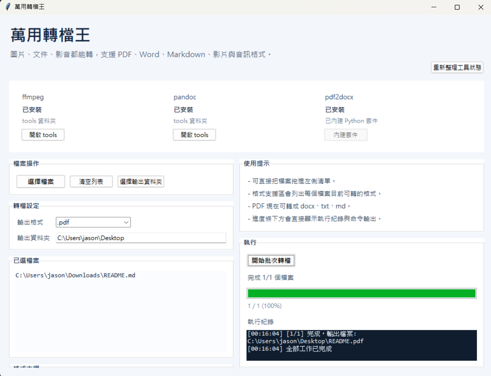
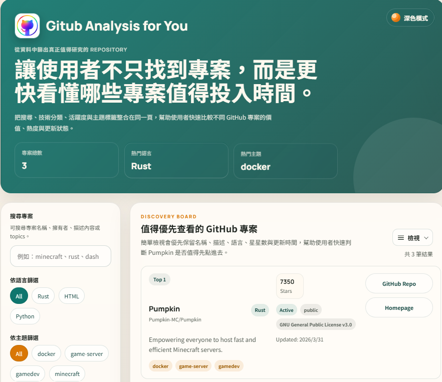

Windows UtilityWanyongConverter
A portable Windows file conversion tool that brings image, document, and media conversion into one interface, with support for batch workflows and portable use.
Welcome
Explore project demos, key features, technologies, competition results, and supporting materials from the sidebar or the project cards below.
Featured Projects
Works

Windows UtilityA portable Windows file conversion tool that brings image, document, and media conversion into one interface, with support for batch workflows and portable use.

WebsiteA web platform for searching, filtering, and analyzing GitHub projects with card and list views, quick inspection, and dark mode support.